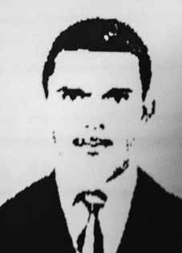

Antônio
Ferreira
Pinto
CIRCUNSTÂNCIAS DA MORTE
Segundo o Relatório Arroyo, consta que Antônio Ferreira Pinto “Alfaiate” foi visto pela última vez em 14 de janeiro de 1974, junto com “Beto” (Lúcio Petit da Silva) e “Piauí” (Antônio de Pádua Costa), quando os três foram colher mandiocas para uma refeição.
Soldados lhes seguiram, atiraram e, após esse evento, não mais se teve informações sobre ele. À Comissão de Mortos e Desaparecidos Políticos, em 18 de junho de 1996, Criméia Schmidt de Almeida, Maria Amélia de Almeida Teles e César Augusto Teles declararam terem conhecido Antônio “Alfaiate” quando este residia em Duque de Caxias (RJ), em 1967, reconhecendo-o como a mesma pessoa que, em cartaz elaborado pelo PCdoB em 1996, consta com o nome de Antônio Ferreira Pinto. Criméia acrescenta que conviveu com Antônio “Alfaiate” em um sítio na localidade conhecida como Metade, no município de São Domingos do Araguaia.
Em 12 de abril de 1972, após o cerco das Forças Armadas, refugiaram-se na mata, onde Criméia permaneceu até sua saída da região, enquanto “Alfaiate” ali continuou até seu desaparecimento. Outros depoimentos de moradores da região informam que “Alfaiate”, Lúcio Petit da Silva e Uirassu Assis Batista “Valdir” foram presos juntos, por volta de 21 de abril de 1974. Em depoimento prestado por Margarida Ferreira Félix ao Ministério Público Federal, em 3 de julho de 2001, afirma-se que três guerrilheiros foram presos na casa do morador conhecido como “Manezinho das Duas” em uma emboscada.
Adalgisa Moraes da Silva afirmou ainda que os três guerrilheiros foram levados presos para a base militar da Bacaba. Antonio Felix da Silva, morador que prestou depoimento aos procuradores do Ministério Público Federal, deu informações de como “Alfaiate” foi preso, afirmando que, em abril de 1974, os militares pousaram em uma clareira e foram a pé até a casa de Manezinho, onde, por volta das 7h da manhã de 21 de abril de 1974, estavam Antônio, Valdir e Beto, com os pulsos amarrados. Os militares se comunicaram com sua base por rádio e, por volta das nove horas, teria pousado um helicóptero que levou os militares e os três prisioneiros.
De acordo com relato do major Sebastião Rodrigues de Moura, o “Curió”, “Alfaiate” e “Valdir” foram mortos uma semana depois na Clareira do Cabo Rosa, e “Beto” ficou mais tempo vivo e foi interrogado pelo general Bandeira. Relatório do CIE de 1975 afirma que Antônio teria morrido em 30 de abril de 1974. Os trabalhos da CEMDP permitiram confirmar a identificação de “Alfaiate” como Antônio Ferreira Pinto e reconhecer a responsabilidade do Estado por sua morte.
According to the Arroyo Report, it appears that Antônio Ferreira Pinto “Tailor” was last seen on January 14, 1974, together with “Beto” (Lúcio Petit da Silva) and “Piauí” (Antônio de Pádua Costa), when the three went to collect cassava for a meal.
Soldiers followed them, shot them and, after this event, there was no more information about him. To the Political Dead and Missing Commission, on June 18, 1996, Criméia Schmidt de Almeida, Maria Amélia de Almeida Teles and César Augusto Teles declared that they had known Antônio “Alfaiate” when he lived in Duque de Caxias (RJ), in 1967, recognizing him as the same person who, in a poster prepared by the PCdoB in 1996, appears with the name of Antônio Ferreira Pinto. Criméia adds that he lived with Antônio “Alfaiate” on a farm in the town known as Metade, in the municipality of São Domingos do Araguaia.
On April 12, 1972, after the siege by the Armed Forces, they took refuge in the forest, where Crimea remained until they left the region, while “Alfaiate” remained there until his disappearance. Other statements from residents of the region report that “Alfaiate”, Lúcio Petit da Silva and Uirassu Assis Batista “Valdir” were arrested together, around April 21, 1974. In a statement given by Margarida Ferreira Félix to the Federal Public Ministry, on July 3, 2001, it is stated that three guerrillas were arrested in the house of the resident known as “Manezinho das Duas” in an ambush.
Adalgisa Moraes da Silva also stated that the three guerrillas were taken prisoner to the Bacaba military base. Antonio Felix da Silva, a resident who gave a statement to Federal Public Ministry prosecutors, gave information on how “Alfaiate” was arrested, stating that, in April 1974, the soldiers landed in a clearing and went on foot to Manezinho's house, where, at around 7 am on April 21, 1974, Antônio, Valdir and Beto were there, with their wrists tied. The military communicated with their base by radio and, around nine o'clock, a helicopter landed and took the soldiers and the three prisoners.
According to a report by Major Sebastião Rodrigues de Moura, “Curió”, “Alfaiate” and “Valdir” were killed a week later in Clareira do Cabo Rosa, and “Beto” stayed alive longer and was interrogated by General Bandeira. CIE report from 1975 states that Antônio died on April 30, 1974. CEMDP's work made it possible to confirm the identification of “Tailor” as Antônio Ferreira Pinto and recognize the State's responsibility for his death.
Según el Informe Arroyo, parece que Antônio Ferreira Pinto “Sastre” fue visto por última vez el 14 de enero de 1974, junto con “Beto” (Lúcio Petit da Silva) y “Piauí” (Antônio de Pádua Costa), cuando los tres fueron a recoger mandioca para comer.
Los soldados los siguieron, les dispararon y, tras este hecho, no hubo más información sobre él. Ante la Comisión Política de Muertos y Desaparecidos, el 18 de junio de 1996, Criméia Schmidt de Almeida, Maria Amélia de Almeida Teles y César Augusto Teles declararon haber conocido a Antônio “Alfaiate” cuando vivía en Duque de Caxias (RJ), en 1967, reconociéndolo como la misma persona que, en un cartel elaborado por el PCdoB en 1996, aparece con el nombre de Antônio Ferreira. Pinto. Criméia añade que vivía con Antônio “Alfaiate” en una finca de la localidad conocida como Metade, en el municipio de São Domingos do Araguaia.
El 12 de abril de 1972, tras el asedio de las Fuerzas Armadas, se refugiaron en el bosque, donde permaneció Crimea hasta que abandonaron la región, mientras que “Alfaiate” permaneció allí hasta su desaparición. Otras declaraciones de vecinos de la región refieren que “Alfaiate”, Lúcio Petit da Silva y Uirassu Assis Batista “Valdir” fueron detenidos juntos, alrededor del 21 de abril de 1974. En declaración de Margarida Ferreira Félix al Ministerio Público Federal, el 3 de julio de 2001, se afirma que tres guerrilleros fueron detenidos en la casa del vecino conocido como “Manezinho das Duas” en una emboscada.
Adalgisa Moraes da Silva también afirmó que los tres guerrilleros fueron llevados prisioneros a la base militar de Bacaba. Antonio Felix da Silva, vecino que rindió declaración ante los fiscales del Ministerio Público Federal, informó sobre cómo fue detenido “Alfaiate”, afirmando que, en abril de 1974, los militares desembarcaron en un claro y se dirigieron a pie hasta la casa de Manezinho, donde, alrededor de las 7 de la mañana del 21 de abril de 1974, se encontraban Antônio, Valdir y Beto, con las muñecas atadas. Los militares se comunicaron con su base por radio y, sobre las nueve, aterrizó un helicóptero que se llevó a los soldados y a los tres prisioneros.
Según un informe del mayor Sebastião Rodrigues de Moura, “Curió”, “Alfaiate” y “Valdir” fueron asesinados una semana después en Clareira do Cabo Rosa, y “Beto” sobrevivió más tiempo y fue interrogado por el general Bandeira. Informe del CIE de 1975 afirma que Antônio murió el 30 de abril de 1974. El trabajo del CEMDP permitió confirmar la identificación del “Sastre” como Antônio Ferreira Pinto y reconocer la responsabilidad del Estado por su muerte.